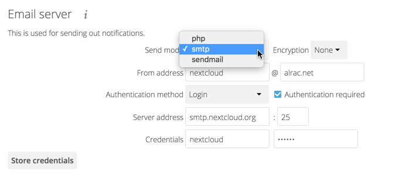
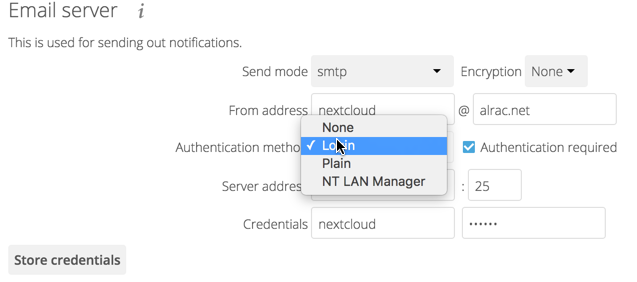
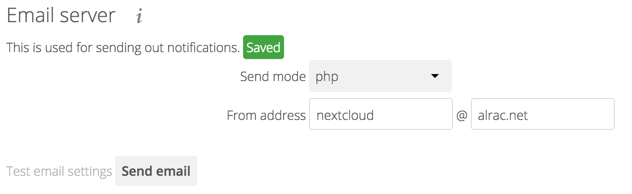

Email Configuration¶
Nextcloud is capable of sending password reset emails, notifying users of new file shares, changes in files, and activity notifications. Your users configure which notifications they want to receive on their Personal pages.
Nextcloud does not contain a full email server, but rather connects to your existing mail server. You must have a functioning mail server for Nextcloud to be able to send emails. You may have a mail server on the same machine as Nextcloud, or it may be a remote server.
Nextcloud 7 introduces a new feature, the graphical Email Configuration Wizard.

With the new wizard, connecting Nextcloud to your mail server is fast and easy.
The wizard fills in the values in config/config.php, so you may use either
or both as you prefer.
The Nextcloud Email wizard supports three types of mail server connections: SMTP, PHP, and Sendmail. Use the SMTP configurator for a remote server, and PHP or Sendmail when your mail server is on the same machine as Nextcloud.
Note
The Sendmail option refers to the Sendmail SMTP server, and any
drop-in Sendmail replacement such as Postfix, Exim, or Courier. All of
these include a sendmail binary, and are freely-interchangeable.
Configuring an SMTP Server¶
You need the following information from your mailserver administrator to connect Nextcloud to a remote SMTP server:
- Encryption type: None, SSL, or TLS
- The From address you want your outgoing Nextcloud mails to use
- Whether authentication is required
- Authentication method: None, Login, Plain, or NT LAN Manager
- The server’s IP address or fully-qualified domain name
- Login credentials, if required

Your changes are saved immediately, and you can click the Send Email button to test your configuration. This sends a test message to the email address you configured on your Personal page. The test message says:
If you received this email, the settings seem to be correct.
--
Nextcloud
a safe home for all your data
Configuring PHP and Sendmail¶
Configuring PHP or Sendmail requires only that you select one of them, and then enter your desired return address.

How do you decide which one to use? PHP mode uses your local sendmail
binary. Use this if you want to use php.ini to control some of your mail
server functions, such as setting paths, headers, or passing extra command
options to the sendmail binary. These vary according to which server you
are using, so consult your server’s documentation to see what your options are.
In most cases the smtp option is best, because it removes the extra step of
passing through PHP, and you can control all of your mail server options in one
place, in your mail server configuration.
Using Email Templates¶
We removed the template editor in Nextcloud 12 because we changed how emails are generated. While the customization capabilities offered by the template editor were easy to use, they often resulted in broken emails. To fix this, we designed a much easier mechanism that automatically generates emails which follow the theme settings and look the same in all the different email clients out there.
Note
If, for some reason, you need text-only emails, consider simply configuring this on the client side or let the receiving (or even sending) mail server drop the HTML part. Note that there is no security impact from sending HTML emails, just from displaying them and thus any security risk can only be mitigated by disabling showing HTML on the client (or removing the HTML part in the mail server).
Modifying the look of emails beyond the theming app capabilities¶
You can now overwrite templates by writing a class that implements the template interface (or extends it to not need to copy over everything). Easiest way is then put this class into an app and load it (so you do not need to patch it on every update).
This is the interface of the class that needs to be implemented: https://github.com/nextcloud/server/blob/master/lib/public/Mail/IEMailTemplate.php
That is the implementation that could be extended and used to see how it works: https://github.com/nextcloud/server/blob/master/lib/private/Mail/EMailTemplate.php
An example from a GitHub issue:
- Look at the source code of extended class OCMailEMailTemplate::class
- Then override what you need in your own OCMailEMailTemplate::class extension
Example:
Let’s assume that we need to override the email header:
<?php
namespace \OCA\MyApp;
use OC\Mail\EMailTemplate;
class MyClass extends EMailTemplate
{
protected $header = <<<EOF
<table align="center" class="wrapper">
// your theme email header modification
</table>
EOF;
}
Then in
config/config.phpchangemail_template_classto your class namespace:'mail_template_class' => 'OCA\\MyApp\\MyClass',
You will find a detailed step by step guide in our support portal.
Setting Mail Server Parameters in config.php¶
If you prefer, you may set your mail server parameters in config/config.php.
The following examples are for SMTP, PHP, Sendmail, and Qmail.
If you want to send email using a local or remote SMTP server it is necessary to enter the name or IP address of the server, optionally followed by a colon separated port number, e.g. :425. If this value is not given the default port 25/tcp will be used unless you change that by modifying the mail_smtpport parameter.
<?php
"mail_smtpmode" => "smtp",
"mail_smtphost" => "smtp.server.dom:425",
or
<?php
"mail_smtpmode" => "smtp",
"mail_smtphost" => "smtp.server.dom",
"mail_smtpport" => 425,
If a malware or SPAM scanner is running on the SMTP server it might be necessary that you increase the SMTP timeout to e.g. 30s:
<?php
"mail_smtptimeout" => 30,
If the SMTP server accepts insecure connections, the default setting can be used:
<?php
"mail_smtpsecure" => '',
If the SMTP server only accepts secure connections you can choose between the following two variants:
SSL¶
A secure connection will be initiated using the outdated SMTPS protocol which uses the port 465/tcp:
<?php
"mail_smtphost" => "smtp.server.dom:465",
"mail_smtpsecure" => 'ssl',
TLS¶
A secure connection will be initiated using the STARTTLS protocol which uses the default port 25/tcp:
<?php
"mail_smtphost" => "smtp.server.dom",
"mail_smtpsecure" => 'tls',
And finally it is necessary to configure if the SMTP server requires authentication, if not, the default values can be taken as is.
<?php
"mail_smtpauth" => false,
"mail_smtpname" => "",
"mail_smtppassword" => "",
If SMTP authentication is required you have to set the required username and password and can optionally choose between the authentication types LOGIN (default) or PLAIN.
<?php
"mail_smtpauth" => true,
"mail_smtpauthtype" => "LOGIN",
"mail_smtpname" => "username",
"mail_smtppassword" => "password",
PHP mail¶
If you want to use PHP mail it is necessary to have an installed and working email system on your server. Which program in detail is used to send email is defined by the configuration settings in the php.ini file. (On *nix systems this will most likely be Sendmail.) Nextcloud should be able to send email out of the box.
<?php
"mail_smtpmode" => "php",
"mail_smtphost" => "127.0.0.1",
"mail_smtpport" => 25,
"mail_smtptimeout" => 10,
"mail_smtpsecure" => "",
"mail_smtpauth" => false,
"mail_smtpauthtype" => "LOGIN",
"mail_smtpname" => "",
"mail_smtppassword" => "",
Sendmail¶
If you want to use the well known Sendmail program to send email, it is necessary to have an installed and working email system on your *nix server. The sendmail binary (/usr/sbin/sendmail) is usually part of that system. Nextcloud should be able to send email out of the box.
<?php
"mail_smtpmode" => "sendmail",
"mail_smtphost" => "127.0.0.1",
"mail_smtpport" => 25,
"mail_smtptimeout" => 10,
"mail_smtpsecure" => "",
"mail_smtpauth" => false,
"mail_smtpauthtype" => "LOGIN",
"mail_smtpname" => "",
"mail_smtppassword" => "",
qmail¶
If you want to use the qmail program to send email, it is necessary to have an installed and working qmail email system on your server. The sendmail binary (/var/qmail/bin/sendmail) will then be used to send email. Nextcloud should be able to send email out of the box.
<?php
"mail_smtpmode" => "qmail",
"mail_smtphost" => "127.0.0.1",
"mail_smtpport" => 25,
"mail_smtptimeout" => 10,
"mail_smtpsecure" => "",
"mail_smtpauth" => false,
"mail_smtpauthtype" => "LOGIN",
"mail_smtpname" => "",
"mail_smtppassword" => "",
Send a Test Email¶
To test your email configuration, save your email address in your personal settings and then use the Send email button in the Email Server section of the Admin settings page.
Troubleshooting¶
If you are unable to send email, try turning on debugging. Do this by enabling
the mail_smtpdebug parameter in config/config.php.
<?php
"mail_smtpdebug" => true;
Note
Immediately after pressing the Send email button, as described before, several SMTP -> get_lines(): ... messages appear on the screen. This is expected behavior and can be ignored.
Question: Why is my web domain different from my mail domain?
Answer: The default domain name used for the sender address is the hostname where your Nextcloud installation is served. If you have a different mail domain name you can override this behavior by setting the following configuration parameter:
<?php
"mail_domain" => "example.com",
This setting results in every email sent by Nextcloud (for example, the password reset email) having the domain part of the sender address appear as follows:
no-reply@example.com
Question: How can I find out if an SMTP server is reachable?
Answer: Use the ping command to check the server availability:
ping smtp.server.dom
PING smtp.server.dom (ip-address) 56(84) bytes of data.
64 bytes from your-server.local.lan (192.168.1.10): icmp_req=1 ttl=64
time=3.64ms
Question: How can I find out if the SMTP server is listening on a specific TCP port?
Answer: The best way to get mail server information is to ask your mail
server admin. If you are the mail server admin, or need information in a
hurry, you can use the netstat command. This example shows all active
servers on your system, and the ports they are listening on. The SMTP server is
listening on localhost port 25.
# netstat -pant
Active Internet connections (servers and established)
Proto Recv-Q Send-Q Local Address Foreign Address State ID/Program name
tcp 0 0 0.0.0.0:631 0.0.0.0:* LISTEN 4418/cupsd
tcp 0 0 127.0.0.1:25 0.0.0.0:* LISTEN 2245/exim4
tcp 0 0 127.0.0.1:3306 0.0.0.0:* LISTEN 1524/mysqld
- 25/tcp is unencrypted smtp
- 110/tcp/udp is unencrypted pop3
- 143/tcp/udp is unencrypted imap4
- 465/tcp is encrypted ssmtp
- 993/tcp/udp is encrypted imaps
- 995/tcp/udp is encrypted pop3s
Question: How can I determine if the SMTP server supports the outdated SMTPS protocol?
Answer: A good indication that the SMTP server supports the SMTPS protocol is that it is listening on port 465.
Question: How can I determine what authorization and encryption protocols the mail server supports?
Answer: SMTP servers usually announce the availability of STARTTLS
immediately after a connection has been established. You can easily check this
using the telnet command.
Note
You must enter the marked lines to obtain the information displayed.
telnet smtp.domain.dom 25
Trying 192.168.1.10...
Connected to smtp.domain.dom.
Escape character is '^]'.
220 smtp.domain.dom ESMTP Exim 4.80.1 Tue, 22 Jan 2013 22:39:55 +0100
EHLO your-server.local.lan # <<< enter this command
250-smtp.domain.dom Hello your-server.local.lan [ip-address]
250-SIZE 52428800
250-8BITMIME
250-PIPELINING
250-AUTH PLAIN LOGIN CRAM-MD5 # <<< Supported auth protocols
250-STARTTLS # <<< Encryption is supported
250 HELP
QUIT # <<< enter this command
221 smtp.domain.dom closing connection
Connection closed by foreign host.
Enabling Debug Mode¶
If you are unable to send email, it might be useful to activate further debug messages by enabling the mail_smtpdebug parameter:
<?php
"mail_smtpdebug" => true,
Note
Immediately after pressing the Send email button, as described before, several SMTP -> get_lines(): ... messages appear on the screen. This is expected behavior and can be ignored.